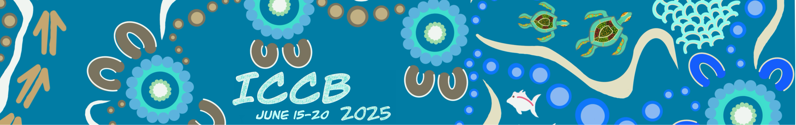
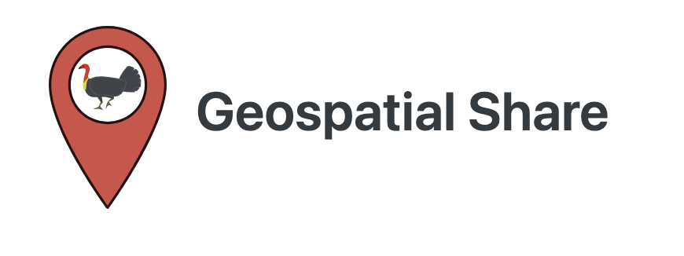
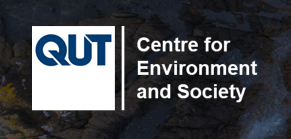
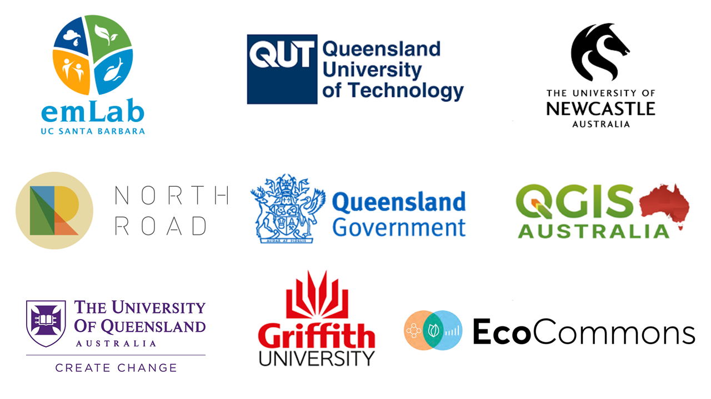

Open Source Geospatial Tools for Conservation under Climate Change

This repo contains the materials for the ICCB workshop titled “Open Source Geospatial Tools for Conservation under Climate Change”.
Aim of the workshop
Over two days, this training workshop aims to equip participants with the core skills of conservation planning and management with open source geospatial tools - from the basics of R spatial, to climate modelling, species distribution modelling, spatial conservation planning, all the way to making beautiful maps with QGIS.
Key case study question
Koalas (Phascolarctos cinereus) in South East Queensland (SEQ) inhabit fragmented eucalypt woodlands and rely heavily on Eucalyptus species for food and shelter. The population is already under pressure from habitat loss, disease (notably chlamydia), and vehicle collisions. Climate change poses additional threats through increased frequency of heatwaves, droughts, and bushfires, which reduce food quality, water availability, and suitable habitat. With this in mind, this workshop will seek to address the question: “How can we best conserve the koalas of south east Queensland under climate change?”.
Schedule
The content will be delivered on the weekend prior to ICCB - the 14th and 15th of June 2025.
| Session | Led by | Supported by | Start time | End time |
| Introduction | Mitch Rudge and Catherine Kim | 9:00 | 9:30 | |
| Getting started with geospatial tools in R | Jason Flower (University of California, Santa Barbara) | Mitch Rudge and Catherine Kim | Saturday 9:30 | Saturday 11:00 |
| Morning tea | 11:00 | 11:15 | ||
| Working with climate projection models part 1 | Ralph Trancoso, Sarah Chapman, Rohan Eccles (Queensland Future Climate Science Program) | Mitch Rudge and Catherine Kim | Saturday 11:15 | Saturday 12:30 |
| Lunch day 1 | Saturday 12:30 | Saturday 13:30 | ||
| Working with climate projection models part 2 | 13:30 | 14:00 | ||
| Afternoon tea | 14:00 | 14:15 | ||
| Modelling the future distribution of koalas | Scott Forrest and Charlotte Patterson (QUT) | Mitch Rudge and Catherine Kim | Saturday 14:15 | Saturday 16:30 |
| Koala dinner | TBC | TBC | ||
| Putting it all together with conservation spatial planning | Caitie Kuempel (Griffith University) and Brooke Williams (The University of Newcastle) | Mitch Rudge and Catherine Kim | Sunday 10:00 | Sunday 11:30 |
| Lunch Day 2 | Sunday 11:30 | Sunday 12:30 | ||
| Creating beautiful maps with QGIS | Emma Hain (North Road and QGIS Australia) | Mitch Rudge and Catherine Kim | Sunday 12:30 | Sunday 14:30 |
Before the workshop
Please download and install R, R studio, and QGIS before the workshop. If you are not able to do this, that’s fine but please arrive early so we can get you started.
Workshop GitHub Repository
https://github.com/geospatial-community/ICCB_geospatial_tools_conservation
Location
The University of Queensland St Lucia campus, Forgan Smith Building 01-E107.
About the organisers and supporters

This workshop was organised by Geospatial Share, a grassroots group of spatial enthusiasts whose mission is to build a supportive and inclusive community where students, researchers, and professionals can grow their geospatial skills together. See https://brisbane-geocommunity.netlify.app/ for more.
This workshop was generously sponsored by the Centre for Environment and Society, QUT.

This workshop was made possible by generous contributions by members of the following organisations.
